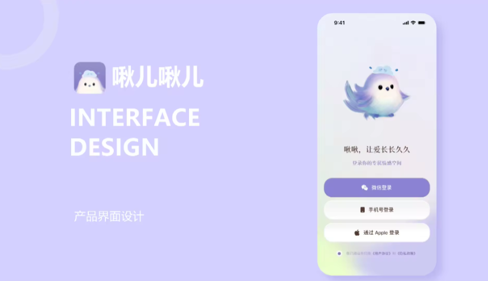
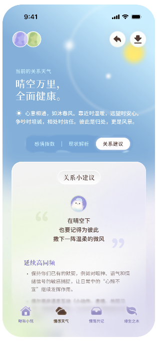
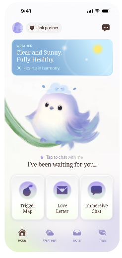
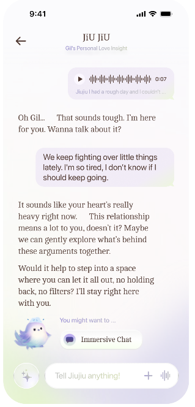
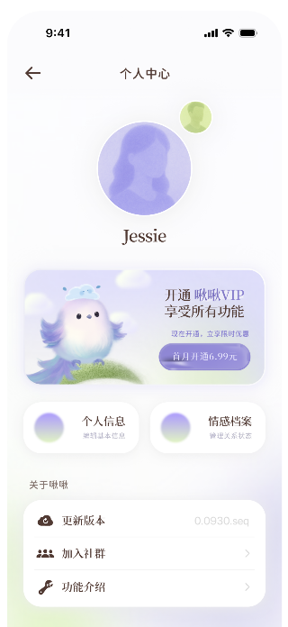
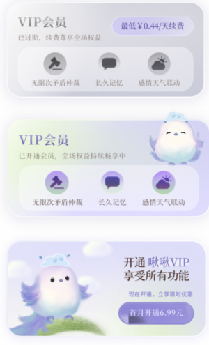

啾啾 · 泛娱乐社交 App
「啾啾」把社交从「匹配效率」转向「关系质量」：首页不堆入口，先用一张「关系天气」卡讲清两个人此刻的状态，再给聊天、倾诉、会员三条下一步。这次不是修几个页面，而是把整个 App 从 0 到 1 做了一遍——先定一套圆角 + 柔光的视觉与交互规范，再用它铺完登录、关系天气、首页、情感聊天、倾诉、个人中心、会员、设置等三十多屏。
主视觉

项目背景
2024.09 立项 · C 端社交
啾啾面向现代快节奏人群，定位集情感倾诉、互动陪伴于一体的泛娱乐社交 App。旧版界面沿用通用社交模板：入口层层堆叠、色彩偏冷，用户打开后并不知道「此刻该做什么」，倾诉与匹配的开口意愿都偏低。
这次不是给旧版打补丁，而是把整个 App 重做一遍：先换提问方式——不问「你想用哪个功能」，而问「你们现在是什么状态」；首页先用一张「关系天气」卡回答状态，再给下一步动作——情绪先于功能。规范定下来之后，剩下的三十多屏才一屏一屏铺开。
设计策略
先讲状态，再给入口
- 首页只保留「关系天气」一张主卡：晴空万里、全面健康这类状态语直接描述关系，功能入口压到一屏之内的三个。
- 把「关系建议」做成卡片层（感情指数 / 现状解析 / 关系建议），一次滑动读完，不再层层跳转。
- 情感聊天改成陪伴式对话：JIU JIU 先共情再给建议，语音与情绪入口常驻输入区。
- 会员、个人中心与品牌小鸟统一到同一套圆角 + 柔光规范，沉淀成可复用组件。
部分界面截图
整个 App 三十多屏里的 5 屏 · 关系天气 / 首页 / 情感聊天 / 个人中心 / 会员
下面 5 屏只是整个 App 的一部分。实际交付覆盖登录注册、关系天气、首页、情感聊天、倾诉、个人中心、会员、设置等三十多屏，连同空态、加载态与异常态一起交付。
只挑这 5 屏，是因为它们各自代表一种页面类型——状态页、首页、对话页、个人页、付费页。同一套规范在这 5 类页面上站得住，剩下的页面就都是复用。





视觉语言
主色紫 · 低饱和中性色
以紫色调为主色、低饱和中性色承托内容；层级上用大圆角卡片 + 柔和投影区分「场景容器」与「互动元素」，动效缓入缓出，避免强刺激；文字层级控制在三级以内，保证倾诉场景下的低干扰阅读。
遇到的问题与解决
3 个整站级权衡
问题整个 App 三十多屏，各页分头开工：圆角、阴影、图标、字号各写一套，交付后开发还原度打折。
解决先定规范再铺页面：8 / 16 / 24 三档圆角、一套 2px 线性图标、三级文字，全部做成组件 Variant；页面只允许调用已定义的组件，不允许临时画。
问题「关系天气」这套状态要在状态页、首页、对话页里反复出现，各页各写一次，同一状态的文案、配色与小鸟表情开始对不上。
解决把状态抽成一份共享数据表（语义 + 一句解释 + 三条建议 + 小鸟表情 + 渐变色），页面只引用不重写，改一处全站同步。
问题玻璃 + 渐变在整站被大量复用，深色壁纸、小屏、长文案三种情况都出过问题：正文对比不足、渐变被裁切、长文案顶破卡片。
解决给整套规范补三条下限：正文对比度 4.5:1 以上、渐变只做背景层不进卡片、卡片内文字最多三级，并把这三种极端情况写进走查清单。
从设计到交付
3 步 · 从一套规范铺到三十多屏
-
1 · 概念 · 定状态语言
先梳理「关系状态」的语义：晴天 / 多云 / 雨天分别对应什么情绪，每种状态配一句解释与三条建议。方向定在「被抱住」的柔和感，紫渐变只做氛围，不抢内容。
-
2 · 制作 · 规范与全量页面
先搭组件库与规范页（圆角 / 阴影 / 图标 / 三级文字），再按页面清单铺满整个 App：登录注册、关系天气、首页、情感聊天、倾诉、个人中心、会员、设置，连同空态、加载态与异常态。
-
3 · 交付 · 规范、标注与走查
交付组件 Variant、规范页与页面清单，和开发一起走查 iOS / Android 两端：玻璃层在深色壁纸上的表现、渐变在小屏上的裁切逐台确认。